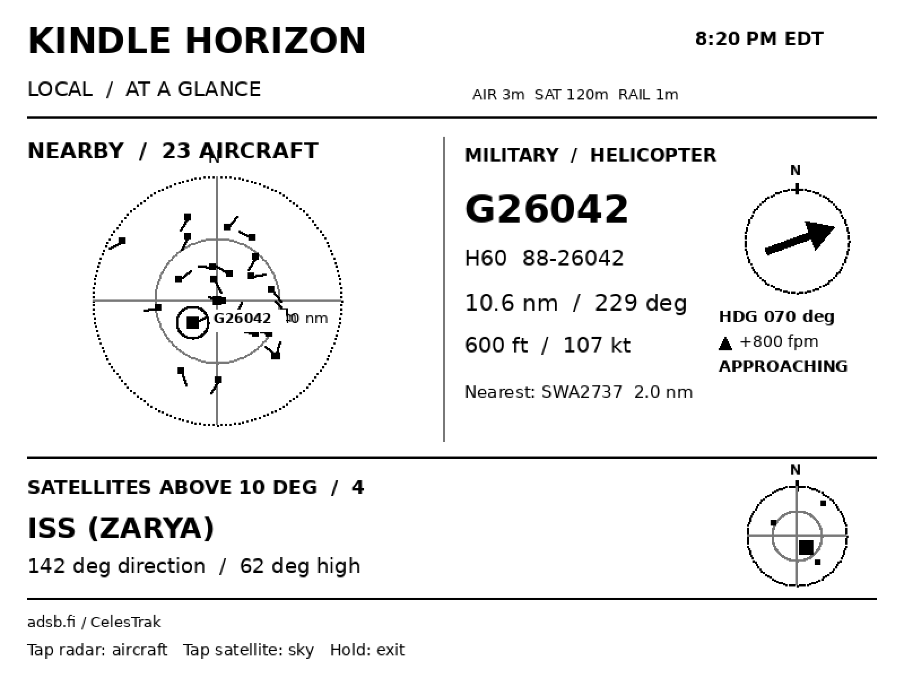
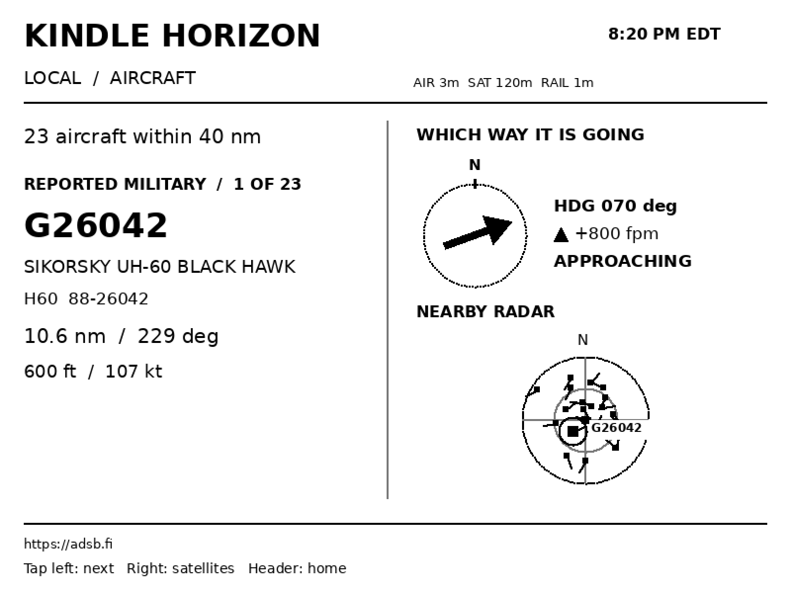
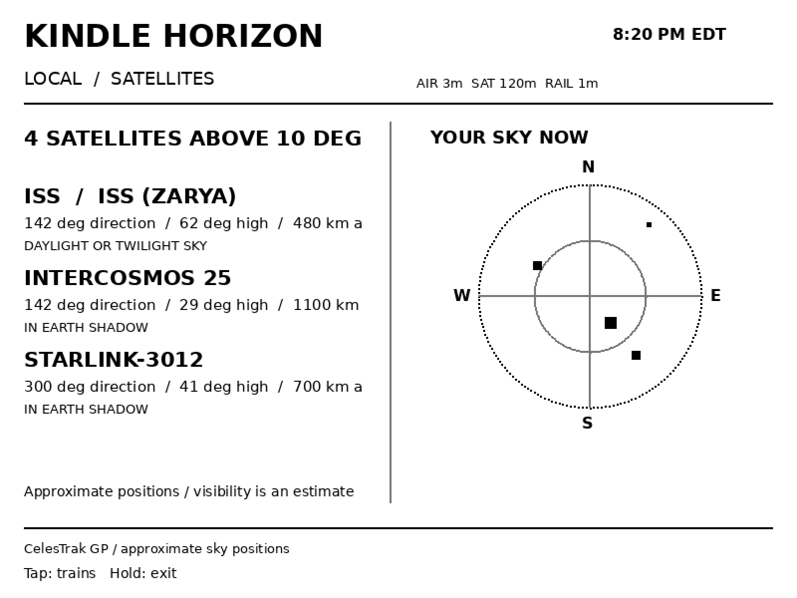
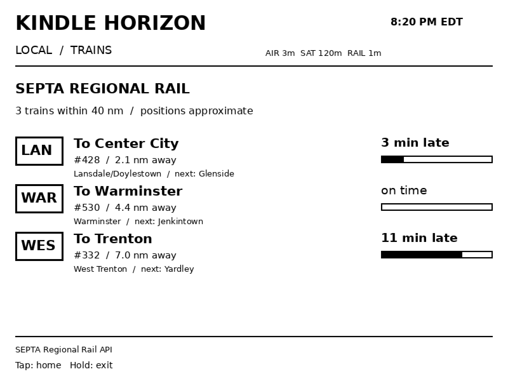
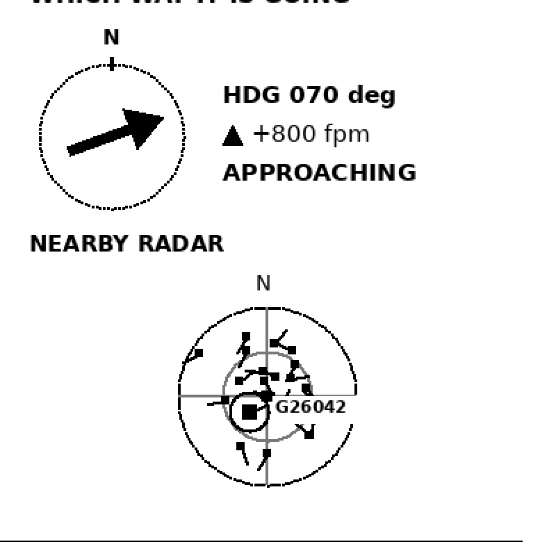
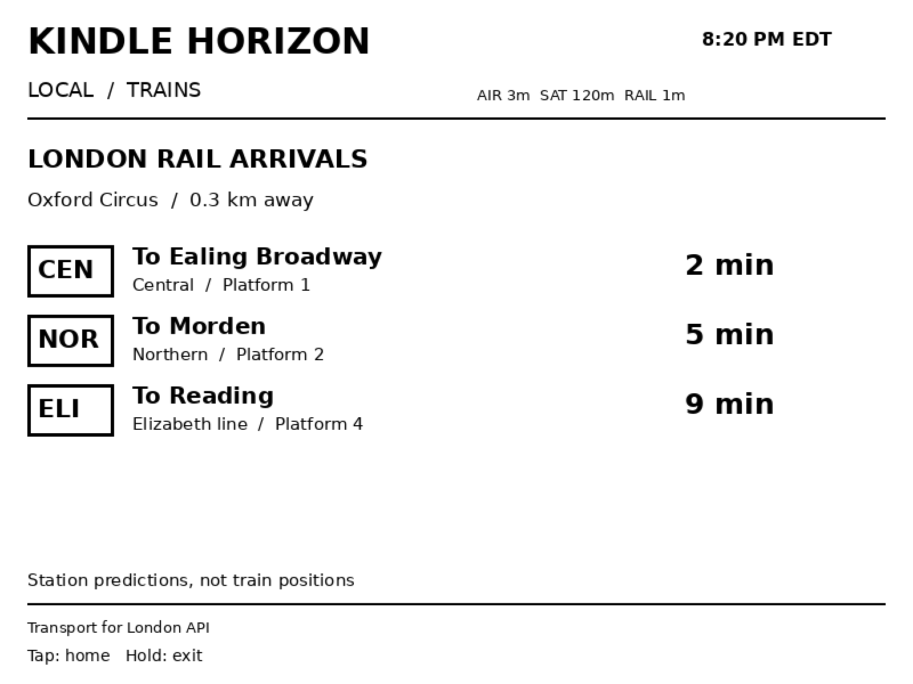

The sky above you, on e-ink.
A KOReader plugin that puts aircraft, satellites and trains on a Kindle.

Aircraft, satellites, trains.
It cycles through them on its own, or you tap to pick one.

40 nmdefault radar range
Aircraft
Callsign, type, registration, altitude and speed, with a heading dial beside the radar.

10°lowest height shown
Satellites
A sky map of up to three satellites, and the ISS when it passes over you.

2rail feeds, SEPTA and TfL
Trains
Each SEPTA train gets a line badge and a delay bar. London shows arrival minutes.
Screens are drawn by the plugin’s own code, with sample data.
Ringed on the radar.
The featured aircraft gets a ring and its callsign, so you can match the dot to the panel.
- Heading
- A dial shows which way it is flying.
- Climb
- A marker shows climb or descent, when the feed reports it.
- Approach
- Approaching, crossing or moving away, from where you are.

What it needs.
| Kindle | A jailbroken Kindle with KOReader. Tested on one older model. |
|---|---|
| Network | Wi-Fi for live data. A power source is recommended. |
| Location | Your own latitude and longitude, entered in the menu. |
| Rail | SEPTA near Philadelphia, TfL near London. Elsewhere, no train screen. |
| Data | adsb.fi for aircraft, CelesTrak for satellites. Personal, non-commercial use. |
Copy one folder.
- Install KOReader on a jailbroken Kindle.
- Copy the kindlesky.koplugin folder, unrenamed, into koreader/plugins and restart.
- Open Tools, Kindle Horizon, Set location and refresh.
- Choose Start display.
